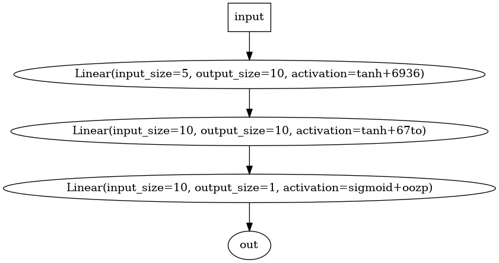

GitHub
MuTorch is a deep learning framework built for educational purposes and to build a deep understanding of how neural networks work. This is not intended to be efficient, but rather very simplistic. The goal is to create a framework that is easy to understand, modify, and learn from. It does not use external libraries and is built from scratch using only Python lists and operators.
Some of the nomenclature used in this framework is inspired by PyTorch and are defined below:
- Node: A node is the most basic unit of the computational graph and represents either a value or an operation.
- Neuron: A neuron is a collection of node which represents a single unit of the neural network. It uses a stack of nodes to compute Wx + b and then applies an activation function to the result.
- Tensor: A tensor is a collection of nodes and can be multi-dimensional. It is used to represent the input and output of a neuron.
- Layer: A layer performs computations on a tensor and returns a tensor.
The framework is built in a modular way, and can be extended to include new layers, activation functions, and optimizers. Examples of how to use the framework to build node-level, tensor-level, or a full fledged Sequential MLP are provided in the Demo Notebook. Loss functions and optimizer implementations are also provided to build an end-to-end understanding of neural network training process. The framework also provides a simple way to visualize the computational graph using Graphviz.
Building a Neural Network
The framework can be used in a few ways:
1. Node-level: The framework can be used to build a single node and then use it to build a computational graph.
from mutorch import Node
from mutorch import nn
# define a node and perform some operations
x = Node(1, name='x', requires_grad=True)
x = x + 2
x = x * 3
x = x ** 0.5
x = x / 4
x = nn.Tanh()(x)
y = (x + 1.1) * 1.2
x = nn.ReLU()(y)
x = (x - 2.3) / 1.4
x = nn.Sigmoid()(x)
# perform a backward pass
x.backward()
2. Tensor-level: An example of tensor-level operation is shown below:
import mutorch
from mutorch import nn
# define tensors and perform some operations
x = mutorch.Tensor([[1,2,3,4,5],
[2,3,4,5,6]])
w = mutorch.Tensor([[1.0, 1.1, 1.2, 1.3, 1.4],
[2.0, 2.1, 2.2, 2.3, 2.4]])
bias = mutorch.Tensor([[1.0, 2.0, 3.0, 4.0, 5.0],
[2.0, 3.0, 4.0, 5.0, 6.0]])
z = ( x * w ) + bias
z = z / 2.2
z = nn.Tanh()(z)
# perform backward pass
z.backward()
3. Sequential MLP: The framework can be used to build a complete neural network through sequential layers. An example is shown below:
from mutorch import nn
# define a sequential neural network with non-linear activation
model = nn.Sequential(
nn.Linear( input_size=5, output_size=10, activation=nn.Tanh() ),
nn.Linear( input_size=10, output_size=10, activation=nn.ReLU() ),
nn.Linear( input_size=10, output_size=1, activation=nn.Sigmoid() )
)
# define an example input tensor with batch size 2
x = [[1,2,3,4,5], [2,3,4,5,6]]
# perform a forward pass
y = model( x )
# perform a backward pass
y.backward()

Optimizers
The framework provides a simple way to build optimizers and use them during the neural network training process. Few examples of optimizers provided within the framework include SGD, Adam, etc.
# example of defining an Adam optimizer
from mutorch import optim
optimizer = optim.Adam(model.parameters(), lr=0.01)
Loss Functions
Loss functions can be easily built using the MuTorch framework. Few example losses implemented within the framework include MSE, L1, SmoothL1, etc.
# example of defining an MSE loss
from mutorch import losses
loss_fn = losses.MSELoss()
Training a Neural Network
Putting it all together, the framework can be used to build a complete neural network and train it using a loss function and an optimizer. An example is shown below:
import mutorch
from mutorch import nn, losses, optim
# input tensor
x = mutorch.Tensor([[0.6, -0.35, 0.47, 0.71, 0.12],
[0.3, 0.45, -0.67, -0.89, 0.23],
[0.5, 0.65, 0.87, 0.99, 0.34],
[0.7, -0.85, 0.97, -0.11, 0.45],
[0.9, -0.01, -0.13, 0.25, -0.56],
[-0.2, 0.32, -0.54, 0.76, 0.98]])
# ground truth
y = mutorch.Tensor([[0.0],
[0.0],
[0.0],
[1.0],
[1.0],
[1.0]])
# define a sequential neural network with non-linear activation
model = nn.Sequential(
nn.Linear( input_size=5, output_size=10, activation=nn.Tanh() ),
nn.Linear( input_size=10, output_size=10, activation=nn.ReLU() ),
nn.Linear( input_size=10, output_size=1, activation=nn.Sigmoid() )
)
# define an optimizer and loss function
optimizer = optim.Adam(model.parameters(), lr=0.01)
loss_fn = losses.MSELoss()
# perform 500 epochs of training
for epoch in range(500):
# reset the gradients
optimizer.zero_grad()
# perform a forward pass
y_pred = model(x)
# compute the loss
loss = loss_fn(y_pred, y)
# perform a backward pass
loss.backward()
# update the parameters
optimizer.step()
Ground truth: [0.0, 0.0, 0.0, 1.0, 1.0, 1.0]
Model output before training: [0.2625455157756882, 0.06476329944788511, 0.09198898000403521, 0.13625100888110614, 0.3455240473051357, 0.04765093283946377]
#################### Starting model training...
Epoch 500/500 - Loss: 0.000075: 100% ||||||||||||||||||||||||| [00:07<00:00, 69.41it/s]
#################### Training complete!
Model output after training: [0.012926827557352217, 0.008991985611204682, 0.0027829626242188233, 0.9912839449884999, 0.9925483053096971, 0.9921878687511471]
Model weights can further be saved and loaded using model.save(filename) and model.load(filename) respectively.
This was just a toy example, but it can easily be extended to a more realistic problem such as classification. One can also further dissect the model to visualize the decision boundary as shown in the figure above.
For a better understanding of the framework, examples on how to train models for realistic problems, please see the Demo Notebook.


 1.8.17
1.8.17